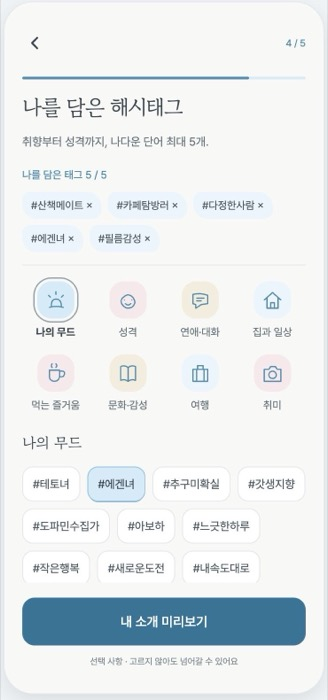

"나를 담은 해시태그" 화면을 Mobbin에서 관심사 고르기 화면 여섯 개를 보고 정리한 원칙으로 다시 그렸어요. 무드와 색, 글꼴은 지금 야화 그대로이고, 버튼 종류와 고르는 흐름만 정돈했어요.
두 시안 모두 휴대폰 안에서 직접 눌러 볼 수 있어요. 태그를 고르고 빼고, 더 보기와 5개 한도, 건너뛰기까지 움직여요.

관습을 충실히 따른 안전한 안이에요. 주제는 맨 앞 "추천"부터 시작하는 글자 탭, 태그는 칩 한 종류, 고른 수는 아래 버튼 바로 위에 있어요.
칩 높이 36 · 탭 높이 40 · 아래 영역 개수 줄 + 버튼 52
관습을 하나 일부러 깬 차별화 안이에요. 주제 탭으로 오가는 대신, 짧은 질문 세 개를 위에서 아래로 놓아 스크롤 한 번에 끝나요.
질문 3 · 테이프 칸 32 · 칩 높이 36 · 건너뛰기 + 버튼 52
지금 화면의 주제 아이콘 여덟 개를 그대로 쓰면서, 버튼 종류와 흐름은 위 원칙대로 정돈한 세 가지예요. 태그 칩, 아래 개수 줄, 5개 한도는 A와 같아요.
A안의 글자 탭 자리에 작은 아이콘 타일(40)을 넣었어요. 아이콘이 주제를 빨리 알아보게 해 주면서도 칩보다 작아서, 누르는 대상은 여전히 태그예요.
아이콘 타일 40 · 모서리 14 · 글 11 · 탭 폭 64
지금처럼 여덟 개 주제 그리드가 화면의 주인공이에요. 대신 그리드는 "들어가는 문"이고, 누르면 아래에서 그 주제의 태그 시트가 올라와 거기서 골라요.
아이콘 카드 56 · 모서리 20 · 시트 높이 480(화면 84%까지) · 고르기 끝 버튼
탭 없이 여덟 주제를 위에서 아래로 늘어놓고, 각 주제 머리에 아이콘과 이름을 달았어요. 아이콘이 책갈피처럼 구역을 나눠 줘요.
머리 아이콘 36 · 모서리 12 · 주제명 고운바탕 18 · 주제마다 칩 6
시안을 다 만든 뒤 레퍼런스와 레이아웃 · 색 · 컴포넌트 모양 · 문구를 하나씩 비교했어요. 두 개 이상 겹치면 다시 그리는 기준이에요.
| 시안 | 반영 원칙 | 가장 닮은 레퍼런스 | 겹친 항목 | 다른 점 |
|---|---|---|---|---|
| A | P1 · P2 · P3 · P4 · P5 · P6 | 대형 커뮤니티 앱 관심사 화면 | 컴포넌트 모양 1개(외곽선 알약 칩 + 체크) | 주제 탭과 탭별 개수, 아래 개수 줄과 다섯 칸 막대, 글 버튼 건너뛰기, 야화 색과 # 태그 문구 |
| B | P2 · P3 · P4 · P5 · P7 | 데이팅 앱 관심사 5개 화면 | 없음(추천 묶음이라는 생각만 비슷) | 순서 있는 질문 세 개, 테이프 다섯 칸, 자기소개 노트와 이어지는 재질 |
| C1 | P1 · P2 · P3 · P4 · P6 | 마이크로블로그 앱 관심사 화면 | 없음(그 앱은 칩 안에 아이콘, 여기는 탭에만 아이콘) | 야화 파스텔 아이콘 타일 탭, 탭 배지, 아래 개수 줄 |
| C2 | P2 · P3 · P4 | 데이팅 앱 관심사 5개 화면 | 없음 | 주제 그리드 → 시트 두 단계, 그리드 배지, 추천 8개 바로 시작 |
| C3 | P2 · P3 · P4 · P7 | 글쓰기 플랫폼 주제 화면 | 없음 | 아이콘 머리가 있는 주제 구역, 구역마다 고른 수 |